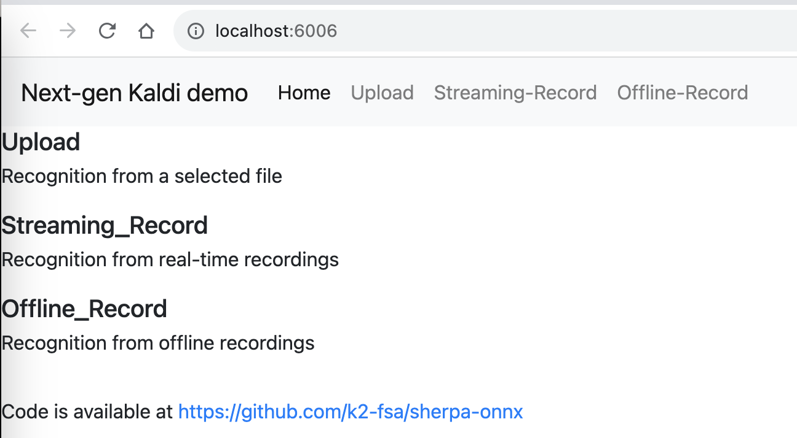

Streaming WebSocket Server
This section describes how to use the Python streaming WebSocket server of sherpa-onnx for speech recognition.
Hint
The server supports multiple clients connecting at the same time.
The code for the streaming server can be found at
Start the server
Hint
If you don’t use a X.509 certificate, due to security reasons imposed by the browser, you are only allowed to use the domain
localhostto access the server if you want to access the microphone in the browser. That is, you can only use
to access the server. You cannot use http://0.0.0.0:port, or http://127.0.0.1:port, or http://public_ip:port.
You can use the following command to generate a self-signed certificate:
cd python-api-examples/web ./generate-certificate.py
The above commands will generate 3 files. You only need to use the file
cert.pem. When starting the server, you pass the following argument:
--certificate=./python-api-examples/web/cert.pem
Please refer to Pre-trained models to download a streaming model before you continue.
We will use csukuangfj/sherpa-onnx-streaming-zipformer-en-2023-06-26 (English) as an example.
First, let us download it:
cd /path/to/sherpa-onnx/
wget https://github.com/k2-fsa/sherpa-onnx/releases/download/asr-models/sherpa-onnx-streaming-zipformer-en-2023-06-26.tar.bz2
tar xvf sherpa-onnx-streaming-zipformer-en-2023-06-26.tar.bz2
rm sherpa-onnx-streaming-zipformer-en-2023-06-26.tar.bz2
Now we can use:
cd /path/to/sherpa-onnx/
python3 ./python-api-examples/streaming_server.py \
--encoder ./sherpa-onnx-streaming-zipformer-en-2023-06-26/encoder-epoch-99-avg-1-chunk-16-left-128.onnx \
--decoder ./sherpa-onnx-streaming-zipformer-en-2023-06-26/decoder-epoch-99-avg-1-chunk-16-left-128.onnx \
--joiner ./sherpa-onnx-streaming-zipformer-en-2023-06-26/joiner-epoch-99-avg-1-chunk-16-left-128.onnx \
--tokens ./sherpa-onnx-streaming-zipformer-en-2023-06-26/tokens.txt \
--port 6006
It will print the following logs:
2023-08-11 16:29:51,522 INFO [streaming_server.py:678] {'encoder': './sherpa-onnx-streaming-zipformer-en-2023-06-26/encoder-epoch-99-avg-1-chunk-16-left-128.onnx', 'decoder': './sherpa-onnx-streaming-zipformer-en-2023-06-26/decoder-epoch-99-avg-1-chunk-16-left-128.onnx', 'joiner': './sherpa-onnx-streaming-zipformer-en-2023-06-26/joiner-epoch-99-avg-1-chunk-16-left-128.onnx', 'tokens': './sherpa-onnx-streaming-zipformer-en-2023-06-26/tokens.txt', 'sample_rate': 16000, 'feat_dim': 80, 'provider': 'cpu', 'decoding_method': 'greedy_search', 'num_active_paths': 4, 'use_endpoint': 1, 'rule1_min_trailing_silence': 2.4, 'rule2_min_trailing_silence': 1.2, 'rule3_min_utterance_length': 20, 'port': 6006, 'nn_pool_size': 1, 'max_batch_size': 50, 'max_wait_ms': 10, 'max_message_size': 1048576, 'max_queue_size': 32, 'max_active_connections': 500, 'num_threads': 2, 'certificate': None, 'doc_root': './python-api-examples/web'}
2023-08-11 16:29:57,476 INFO [streaming_server.py:520] No certificate provided
2023-08-11 16:29:57,480 INFO [server.py:707] server listening on 0.0.0.0:6006
2023-08-11 16:29:57,480 INFO [server.py:707] server listening on [::]:6006
2023-08-11 16:29:57,480 INFO [streaming_server.py:546] Please visit one of the following addresses:
http://localhost:6006
Since you are not providing a certificate, you cannot use your microphone from within the browser using public IP addresses. Only localhost can be used.You also cannot use 0.0.0.0 or 127.0.0.1
We can use the following two methods to interact with the server:
Use Python API
Use a browser by accessing http://localhost:6006
We describe each method below in details.
Use Python API
We provide two Python example files:
Description |
URL |
Send a file for decoding |
|
Send audio samples from a microphone for decoding |
Send a file for decoding
Hint
The example file supports only *.wav files with a single channel
and the each sample should be of type int16_t. The sample rate
does not need to be 16000 Hz, e.g., it can be 48000 Hz, 8000 Hz or some
other value.
We use the following command to send a file for decoding:
cd /path/to/sherpa-onnx
python3 ./python-api-examples/online-websocket-client-decode-file.py \
--server-addr localhost \
--server-port 6006 \
./sherpa-onnx-streaming-zipformer-en-2023-06-26/test_wavs/0.wav
It should give the following output:
2023-08-11 16:37:03,877 INFO [online-websocket-client-decode-file.py:133] Sending ./sherpa-onnx-streaming-zipformer-en-2023-06-26/test_wavs/0.wav
2023-08-11 16:37:03,931 INFO [online-websocket-client-decode-file.py:115] {"text": "", "segment": 0}
2023-08-11 16:37:04,012 INFO [online-websocket-client-decode-file.py:115] {"text": "", "segment": 0}
2023-08-11 16:37:04,128 INFO [online-websocket-client-decode-file.py:115] {"text": "AFTER", "segment": 0}
2023-08-11 16:37:04,170 INFO [online-websocket-client-decode-file.py:115] {"text": "AFTER EARLY", "segment": 0}
2023-08-11 16:37:04,228 INFO [online-websocket-client-decode-file.py:115] {"text": "AFTER EARLY", "segment": 0}
2023-08-11 16:37:04,331 INFO [online-websocket-client-decode-file.py:115] {"text": "AFTER EARLY NIGHTFA", "segment": 0}
2023-08-11 16:37:04,373 INFO [online-websocket-client-decode-file.py:115] {"text": "AFTER EARLY NIGHTFALL THE", "segment": 0}
2023-08-11 16:37:04,433 INFO [online-websocket-client-decode-file.py:115] {"text": "AFTER EARLY NIGHTFALL THE YELLOW LA", "segment": 0}
2023-08-11 16:37:04,535 INFO [online-websocket-client-decode-file.py:115] {"text": "AFTER EARLY NIGHTFALL THE YELLOW LAMPS", "segment": 0}
2023-08-11 16:37:04,576 INFO [online-websocket-client-decode-file.py:115] {"text": "AFTER EARLY NIGHTFALL THE YELLOW LAMPS WOULD LIGHT", "segment": 0}
2023-08-11 16:37:04,645 INFO [online-websocket-client-decode-file.py:115] {"text": "AFTER EARLY NIGHTFALL THE YELLOW LAMPS WOULD LIGHT UP", "segment": 0}
2023-08-11 16:37:04,685 INFO [online-websocket-client-decode-file.py:115] {"text": "AFTER EARLY NIGHTFALL THE YELLOW LAMPS WOULD LIGHT UP HERE", "segment": 0}
2023-08-11 16:37:04,755 INFO [online-websocket-client-decode-file.py:115] {"text": "AFTER EARLY NIGHTFALL THE YELLOW LAMPS WOULD LIGHT UP HERE AND THERE", "segment": 0}
2023-08-11 16:37:04,847 INFO [online-websocket-client-decode-file.py:115] {"text": "AFTER EARLY NIGHTFALL THE YELLOW LAMPS WOULD LIGHT UP HERE AND THERE", "segment": 0}
2023-08-11 16:37:04,887 INFO [online-websocket-client-decode-file.py:115] {"text": "AFTER EARLY NIGHTFALL THE YELLOW LAMPS WOULD LIGHT UP HERE AND THERE THE SQUA", "segment": 0}
2023-08-11 16:37:04,958 INFO [online-websocket-client-decode-file.py:115] {"text": "AFTER EARLY NIGHTFALL THE YELLOW LAMPS WOULD LIGHT UP HERE AND THERE THE SQUALID", "segment": 0}
2023-08-11 16:37:05,057 INFO [online-websocket-client-decode-file.py:115] {"text": "AFTER EARLY NIGHTFALL THE YELLOW LAMPS WOULD LIGHT UP HERE AND THERE THE SQUALID QUAR", "segment": 0}
2023-08-11 16:37:05,095 INFO [online-websocket-client-decode-file.py:115] {"text": "AFTER EARLY NIGHTFALL THE YELLOW LAMPS WOULD LIGHT UP HERE AND THERE THE SQUALID QUARTER OF", "segment": 0}
2023-08-11 16:37:05,164 INFO [online-websocket-client-decode-file.py:115] {"text": "AFTER EARLY NIGHTFALL THE YELLOW LAMPS WOULD LIGHT UP HERE AND THERE THE SQUALID QUARTER OF THE BRO", "segment": 0}
2023-08-11 16:37:05,268 INFO [online-websocket-client-decode-file.py:115] {"text": "AFTER EARLY NIGHTFALL THE YELLOW LAMPS WOULD LIGHT UP HERE AND THERE THE SQUALID QUARTER OF THE BROTHEL", "segment": 0}
2023-08-11 16:37:05,369 INFO [online-websocket-client-decode-file.py:115] {"text": "AFTER EARLY NIGHTFALL THE YELLOW LAMPS WOULD LIGHT UP HERE AND THERE THE SQUALID QUARTER OF THE BROTHELS", "segment": 0}
2023-08-11 16:37:05,370 INFO [online-websocket-client-decode-file.py:154]
Final result is:
{"text": "AFTER EARLY NIGHTFALL THE YELLOW LAMPS WOULD LIGHT UP HERE AND THERE THE SQUALID QUARTER OF THE BROTHELS", "segment": 0}
Send audio samples from a microphone for decoding
We use the following command to run the script:
cd /path/to/sherpa-onnx
python3 ./python-api-examples/online-websocket-client-microphone.py \
--server-addr localhost \
--server-port 6006
It should give you the following output:
{'server_addr': 'localhost', 'server_port': 6006}
Started! Please Speak
0 Background Music, Core Audio (2 in, 2 out)
1 Background Music (UI Sounds), Core Audio (2 in, 2 out)
> 2 MacBook Pro Microphone, Core Audio (1 in, 0 out)
< 3 MacBook Pro Speakers, Core Audio (0 in, 2 out)
4 WeMeet Audio Device, Core Audio (2 in, 2 out)
Use default device: MacBook Pro Microphone
Started! Please speak
If you speak, you will see the recognition result returned by the server.
Use a browser
Start your browser and visit the following address:
You should see a page like below:
{kind=link}
Click Streaming-Record and you will see the following page:
{kind=link}
Click the button Click me to connect to connect to the server and then
you can click the Streaming-Record button to start recording. You should
see the decoded results as you speak.
colab
We provide a colab notebook
 for you to try the Python streaming websocket server example of sherpa-onnx.
for you to try the Python streaming websocket server example of sherpa-onnx.